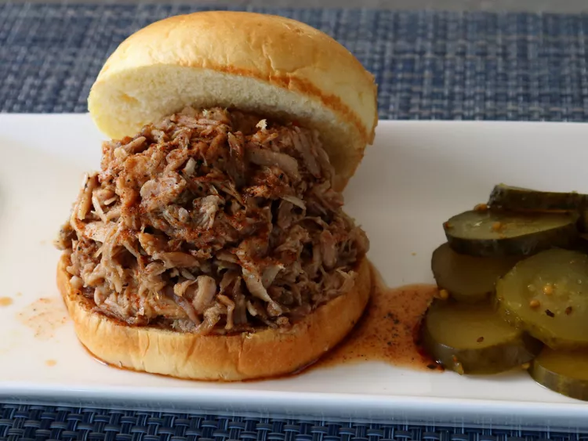

Home
Carolina-Style "Whole Hog" Barbecue Pork

Description
I'm showing you how to do a "whole hog" barbecue without a 6-foot-long barbecue pit, which you probably don't have, and without a whole hog, which you definitely don't have. While you probably could get those things if you really needed to, by using this experimental, mini version, you really don't have to. Serve on buns.
Ingredients
- 2 ½ pounds baby back pork ribs
- 1 ¾ pounds pork shoulder roast
- 1 ¼ pounds pork tenderloin, trimmed
- 1 pound pork belly, skin removed
- ¾ pound pork sirloin roast
For the Rub:
- 5 teaspoons kosher salt
- 2 tablespoons brown sugar
- 2 teaspoons smoked salt
- 2 teaspoons smoked paprika
- 2 teaspoons ground black pepper
- 1 teaspoon ground cumin
- 1 teaspoon garlic powder
- 1 teaspoon onion powder
- ½ teaspoon cayenne pepper
Steps
- Gather all ingredients and preheat the oven to 250 degrees F (120 degrees C).
- Cut ribs, pork shoulder, tenderloin, pork belly, and pork sirloin in half.
- Combine kosher salt, brown sugar, smoked salt, smoked paprika, black pepper, cumin, garlic powder, onion powder, and cayenne for dry rub in a small bowl with a spoon.
- Season cuts of meat on both sides with dry rub; reserve about 4 teaspoons of the rub to season the cooked pork if needed after tasting.
- Place a piece of heavy-duty foil on a sheet pan. Place a half of ribs down in the center of the foil; top with shoulder, tenderloin, pork belly, and sirloin. Top with other rib half.
- Wrap tightly in 3 more layers of foil. Transfer to a Dutch oven and roast in the preheated oven until meat is falling off the bone and very, very tender, about 9 hours.
- Remove bones and pull/shred meat before serving. All or some of the rendered fat can be mixed into the meat.
Chef's Notes:
If you can't find smoked salt, just used more kosher salt. You can also rub the meat with some liquid smoke, according to package directions, as the strength can vary between brands.
You can use regular paprika instead of smoked.
As long as you start and finish with the 2 pieces of ribs, the order of the other cuts doesn't really matter. I used 4 layers of foil to wrap them, but 2 would be plenty. It's just needed to keep the cuts close together.
My "whole hog" weighed 7.25 pounds all together. If different weights are used, the cooking time will vary.